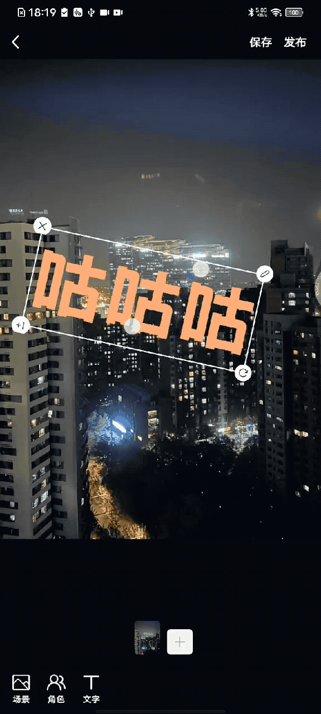

RN 动画 - 缩放、旋转、拖拽
By yestin
需求
仿抖音、小红书，图片视频编辑区，贴图、贴文字功能
- View支持拖拽
- View右下角有一个icon比较特殊，该icon可控制View缩放
- icon随手指移动
- View缩放（以View中心点为圆心）
- View会旋转（以View为中心点为圆心）
- icon位置一直保持在View右下角
- View支持双指捏 进行缩放
效果图 
源码
解读 HBMultiGestureView.js
- 使用的什么手势api？
通过PanResponder为Animted.View添加手势
- 将不同的手势操作 处理为拖拽、旋转、缩放等UI表现，从哪着手？
通过手势回调onPanResponderGrant、onPanResponderMove、onPanResponderRelease去
- 如何判断 确定是否操作的右下角特殊icon视图？
右下角icon onLoad后，拿到target，通过入参rotateScaleTargetRef传递给HBMultiGestureView，HBMultiGestureView内 通过手势回调参数中的e.nativeEvent.target获取所操作的视图target，比较判断是否相等
解读 calculator.js
里面都是公式函数，用在HBMultiGestureView.js 中，处理这些核心计算：
-
计算两指连成的直线移动后的 角度， 从而确定 双指操作时的旋转角度
-
计算两指移动后与移动前相比 两指连线的倍数关系， 从而确定 双指操作时的放大倍数
-
计算A点、初始触摸位置B点、当前触摸位置C点，计算AC/AB放大比例， 从而确定单指拖动右下角按钮时的放大倍数
注：A点，即触摸开始时 视图的中心位置
- 计算向量AC与AB的夹角， 从而确定单指拖动右下角按钮时的旋转角度
解读 CornerToolGestureView.js
-
CornerToolGestureView，是四个角落携带工具按钮的手势视图 -
基于
HBMultiGestureView封装的，所以开发时真正用的是这个CornerToolGestureView
HBMultiGestureView就类似一个三方库，不是面向具体业务的，俗话说就是，开发时直接用它去组装UI 不够简单，于是封装为更好用的组件CornerToolGestureView，用于各个地方。就像是react-native-fast-image，我们并不在开发功能时直接用它，往往会对这个三方组件封装一层(e.g.增加了设置error占位图能力)，再去用于各个地方，比如 我们封装的图片base组件